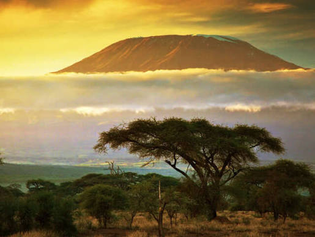

Kilimanjaro Trekking Packages: Machame, Lemosho & More
Climb Africa’s highest mountain with a certified local Kilimanjaro guide from Arusha. Choose the scenic Machame Route (6–7 days), the quieter, high-success Lemosho Route (8 days), the hut-based Marangu Route, the northern Rongai Route or the steep Umbwe Route. Every climb includes park fees, permits, an experienced crew and meals — and you book directly with the guide who leads you to Uhuru Peak.

Marangu Route
Known as the "Coca-Cola" route, Marangu is the only Kilimanjaro trail with mountain huts instead of tents, making it the most comfortable option. The gradient is gentle and the path well-trodden, but the fast ascent profile means a lower summit success rate unless extended to 6 days — we always recommend the extra day for proper acclimatization.
Ask About This RouteMachame Route
The "Whiskey" route is the most scenic way up Kilimanjaro, climbing through rainforest, moorland, alpine desert and the dramatic Barranco Wall before reaching the summit. It’s camping-based throughout and steeper than Marangu, so fitness matters — on 7 days it offers one of the best summit success rates of any route.
Ask About This RouteLemosho Route
Lemosho starts from the remote western side of the mountain, crossing the wide-open Shira Plateau before joining the summit route. Its extra distance and days give your body more time to acclimatize, which is why it consistently records some of the highest summit success rates — ideal if you want a quieter trail and the best odds of reaching Uhuru Peak.
Ask About This RouteRongai Route
Rongai is the only route that approaches Kilimanjaro from the north, near the Kenyan border, through dry pine forest and open moorland. It sees far fewer trekkers than the southern routes, has a gradual gradient, and is a solid choice during the rainy season since the northern slopes stay drier.
Ask About This RouteUmbwe Route
Umbwe is the shortest and steepest route to the summit, climbing straight through dense forest onto a narrow ridge with dramatic views before meeting the Barranco Wall. It’s camping-only with no easy escape route, so we only recommend it to fit, experienced trekkers looking for a tougher, more dramatic climb.
Ask About This RouteWhat's Included
- Kilimanjaro National Park entrance fees
- All required mountain permits
- Professional English-speaking mountain guide
- Experienced porters
- Mountain cook
- Mountain crew wages
- Camping fees
- Quality mountain tents
- Sleeping mattresses
- All meals during the trek
- Safe drinking water during the climb
- Rescue and emergency fees as provided by the park
- Government taxes and applicable fees
- Transport to the Lemosho trailhead
- Transfer from Mweka Gate to Moshi or Arusha
What's Not Included
- International flights
- Domestic flights
- Tanzania visa fees
- Travel and medical insurance
- Personal trekking equipment
- Sleeping bag
- Trekking poles
- Headlamp and personal hiking equipment
- Personal expenses
- Alcoholic and soft drinks
- Laundry services
- Tips for guides, porters, and cook
- Additional hotel accommodation before or after the trek
- Emergency evacuation beyond standard included rescue arrangements
- Optional activities not mentioned in the itinerary
Frequently Asked Questions
Which Kilimanjaro route is best, Machame or Lemosho?
Machame is the most popular scenic route and works well on 7 days. Lemosho is longer (8 days), quieter and gives more time to acclimatize, so it usually has the highest summit success rate. Mussa will help you pick based on your fitness and time.
How many days do I need to climb Kilimanjaro?
Most climbers take 6 to 8 days. Longer itineraries such as the 7-day Machame or 8-day Lemosho give your body more time to adjust to altitude and improve your chances of reaching Uhuru Peak.
When is the best time to climb Kilimanjaro?
The driest months, January to early March and June to October, are generally the best for climbing Kilimanjaro. It is possible year-round, and the Rongai Route is a good choice in the rainy season.
Do I book with an agency or directly with the guide?
You book directly with Mussa, a certified local guide based in Arusha. There are no middlemen, so you know exactly who is leading your climb.
Looking for more? See our Tanzania wildlife safaris, all tour packages, or contact Mussa directly to plan your trip.